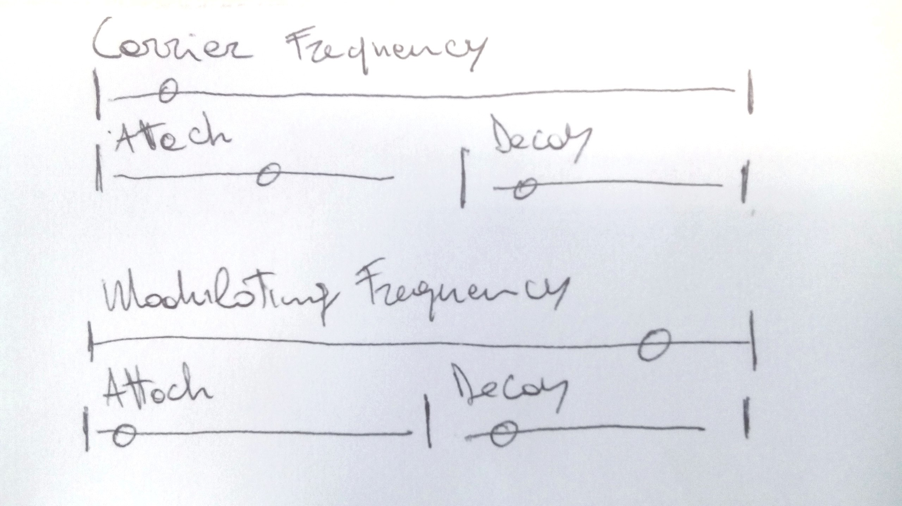

Generally, for technical labels, add number boxes with related unit of measure to display sliders values
There are many attacks and decays parameters. It would be good to establish some sort of hierarchy to better identify which are the main parameters
and which are the associated attacks and decays. Possibly grouping them? See picture

FM 1", "AM 1", "FM 1 Attack", "FM 1 Decay" - better define this paramiters - more explicitly (e.g Carrier Frequency, Carrier Frequency Attack, Carrier Frequency Decay,
Modulating Frequency, Modulating Frequency Attack, Modulating Frequency Decay, etc.).
Eventually, think about perceptual terms (i.e. what does change in the sound)
Model comments
Birds calls are generally a sequence of sounds which slightly vary between each others longer than one or two seconds (see firsts three sound examples). It would be good to have the possibility to generate sounds with lenghts
up to 10 - 15 seconds. Ideally, this could be acheived accessing a short time-line and scheduling a few events recalling presets. Alternativelly, the randomise feature
could be used to manually generate variations within the same sonic scope
Birds calls are characterised by small glissando (pitch shift, see examples below). Those variations are diffucult to replicate with FM synthesis. FM tends to generate simmetric spectrums
(from a distribution of energy viewpoint). In order to generate more realistic bird call it would be useful to implement and control short glissando associated to the carrier frequency
Sound designers comments
Actually not too bad, if you want synthetic birds never heard in nature! But you never know that might be a useful thing
Simplifying the controls - very easy to create a mess!
Presets are great fun, but I soon created a nonsense when I started playing with the parameters!